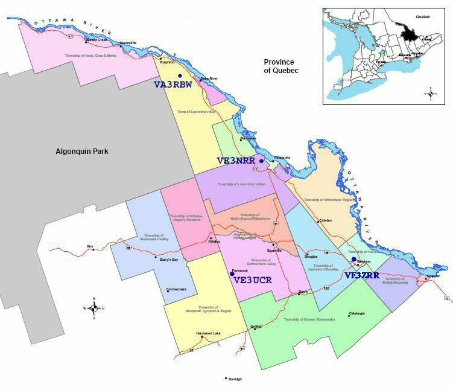

ABOUT
The Renfrew County Amateur Radio Club Inc. is the official Radio Amateurs of Canada affiliated club for Renfrew County in Ontario, Canada.
EXECUTIVE
President
Charles Gale VE3XCC
Vice President
Yvonna Adam VE3RYA
Treasurer
Ean Robertson VE3TLG
Secretary
Steve White VA3WAV
Past-President
Robert MacFarlane VA3AGN
Technical Director
Mike St. Amand VE3ODJ
Emerg Comms Director
Bob Howard VE3YX
REPEATERS
The Renfrew County Amateur Radio Club is located in the County of Renfrew in the Province of Ontario, Canada. We own and maintain four 2 metre repeaters and one 70 cm repeater in the area:
| Repeater | Frequency | Location | Packet Node | Packet BBS | Packet Freq. | APRS | APRS Freq. |
|---|---|---|---|---|---|---|---|
| VE3NRR | 146.760 - | Pembroke | VE3NRR-7 (KA) | VE3NRR-1 | 145.010 | - | - |
| VE3NRR | 448.025 - | Pembroke | - | - | - | - | - |
| VE3UCR | 145.430 - | Foymount | VE3UCR-7 (KA) | VE3UCR-1 | 145.010 | - | - |
| VA3RBW | 146.790 - | Point Alexander | VA3RBW-7 (KA) | VA3RBW-1 | 145.010 | VA3RBW-3 | 144.390 |
| VA3ZRR | 147.120 + | Renfrew | - | - | - | - | - |
VE3ZRR is hard linked to VE3NRR. The other repeaters can be linked with DTMF codes to VE3NRR.
VE3NRR VHF has an IRLP node (2520). Node Status:
Note that the IRLP can only be used on NRR VHF. It won't work through the links or the UHF.
